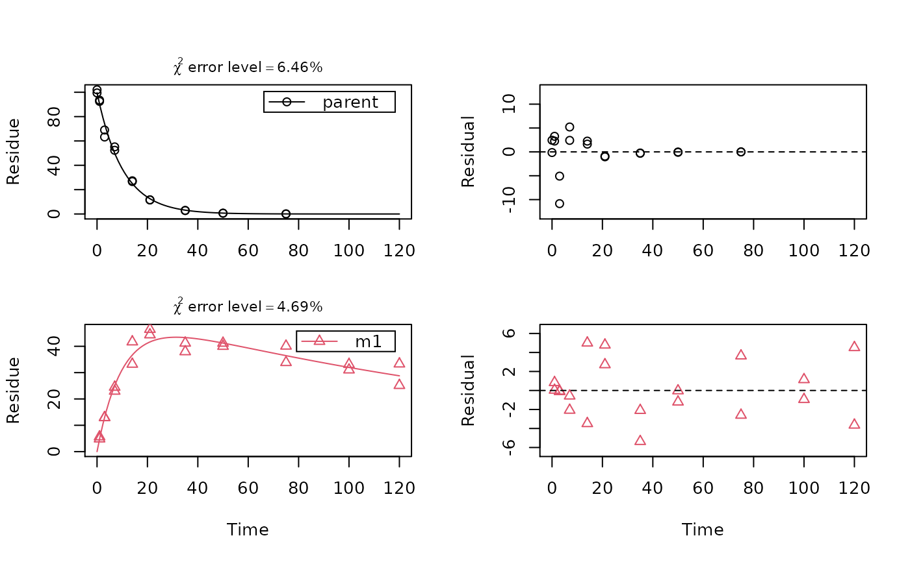

This function maximises the likelihood of the observed data using the Port
algorithm stats::nlminb(), and the specified initial or fixed
parameters and starting values. In each step of the optimisation, the
kinetic model is solved using the function mkinpredict(), except
if an analytical solution is implemented, in which case the model is solved
using the degradation function in the mkinmod object. The
parameters of the selected error model are fitted simultaneously with the
degradation model parameters, as both of them are arguments of the
likelihood function.
mkinfit(
mkinmod,
observed,
parms.ini = "auto",
state.ini = "auto",
err.ini = "auto",
fixed_parms = NULL,
fixed_initials = names(mkinmod$diffs)[-1],
from_max_mean = FALSE,
solution_type = c("auto", "analytical", "eigen", "deSolve"),
method.ode = "lsoda",
use_compiled = "auto",
control = list(eval.max = 300, iter.max = 200),
transform_rates = TRUE,
transform_fractions = TRUE,
quiet = FALSE,
atol = 1e-08,
rtol = 1e-10,
error_model = c("const", "obs", "tc"),
error_model_algorithm = c("auto", "d_3", "direct", "twostep", "threestep",
"fourstep", "IRLS", "OLS"),
reweight.tol = 1e-08,
reweight.max.iter = 10,
trace_parms = FALSE,
test_residuals = FALSE,
...
)A list of class mkinmod, containing the kinetic
model to be fitted to the data, or one of the shorthand names ("SFO",
"FOMC", "DFOP", "HS", "SFORB", "IORE"). If a shorthand name is given, a
parent only degradation model is generated for the variable with the
highest value in observed.
A dataframe with the observed data. The first column called "name" must contain the name of the observed variable for each data point. The second column must contain the times of observation, named "time". The third column must be named "value" and contain the observed values. Zero values in the "value" column will be removed, with a warning, in order to avoid problems with fitting the two-component error model. This is not expected to be a problem, because in general, values of zero are not observed in degradation data, because there is a lower limit of detection.
A named vector of initial values for the parameters,
including parameters to be optimised and potentially also fixed parameters
as indicated by fixed_parms. If set to "auto", initial values for
rate constants are set to default values. Using parameter names that are
not in the model gives an error.
It is possible to only specify a subset of the parameters that the model needs. You can use the parameter lists "bparms.ode" from a previously fitted model, which contains the differential equation parameters from this model. This works nicely if the models are nested. An example is given below.
A named vector of initial values for the state variables of
the model. In case the observed variables are represented by more than one
model variable, the names will differ from the names of the observed
variables (see map component of mkinmod). The default
is to set the initial value of the first model variable to the mean of the
time zero values for the variable with the maximum observed value, and all
others to 0. If this variable has no time zero observations, its initial
value is set to 100.
A named vector of initial values for the error model parameters to be optimised. If set to "auto", initial values are set to default values. Otherwise, inital values for all error model parameters must be given.
The names of parameters that should not be optimised but
rather kept at the values specified in parms.ini. Alternatively,
a named numeric vector of parameters to be fixed, regardless of the values
in parms.ini.
The names of model variables for which the initial state at time 0 should be excluded from the optimisation. Defaults to all state variables except for the first one.
If this is set to TRUE, and the model has only one observed variable, then data before the time of the maximum observed value (after averaging for each sampling time) are discarded, and this time is subtracted from all remaining time values, so the time of the maximum observed mean value is the new time zero.
If set to "eigen", the solution of the system of differential equations is based on the spectral decomposition of the coefficient matrix in cases that this is possible. If set to "deSolve", a numerical ode solver from package deSolve is used. If set to "analytical", an analytical solution of the model is used. This is only implemented for relatively simple degradation models. The default is "auto", which uses "analytical" if possible, otherwise "deSolve" if a compiler is present, and "eigen" if no compiler is present and the model can be expressed using eigenvalues and eigenvectors.
The solution method passed via mkinpredict()
to deSolve::ode() in case the solution type is "deSolve". The default
"lsoda" is performant, but sometimes fails to converge.
If set to FALSE, no compiled version of the
mkinmod model is used in the calls to mkinpredict() even if a compiled
version is present.
A list of control arguments passed to stats::nlminb().
Boolean specifying if kinetic rate constants should be transformed in the model specification used in the fitting for better compliance with the assumption of normal distribution of the estimator. If TRUE, also alpha and beta parameters of the FOMC model are log-transformed, as well as k1 and k2 rate constants for the DFOP and HS models and the break point tb of the HS model. If FALSE, zero is used as a lower bound for the rates in the optimisation.
Boolean specifying if formation fractions should be transformed in the model specification used in the fitting for better compliance with the assumption of normal distribution of the estimator. The default (TRUE) is to do transformations. If TRUE, the g parameter of the DFOP model is also transformed. Transformations are described in transform_odeparms.
Suppress printing out the current value of the negative log-likelihood after each improvement?
Absolute error tolerance, passed to deSolve::ode(). Default
is 1e-8, which is lower than the default in the deSolve::lsoda()
function which is used per default.
Absolute error tolerance, passed to deSolve::ode(). Default
is 1e-10, much lower than in deSolve::lsoda().
If the error model is "const", a constant standard deviation is assumed.
If the error model is "obs", each observed variable is assumed to have its own variance.
If the error model is "tc" (two-component error model), a two component error model similar to the one described by Rocke and Lorenzato (1995) is used for setting up the likelihood function. Note that this model deviates from the model by Rocke and Lorenzato, as their model implies that the errors follow a lognormal distribution for large values, not a normal distribution as assumed by this method.
If "auto", the selected algorithm depends on the error model. If the error model is "const", unweighted nonlinear least squares fitting ("OLS") is selected. If the error model is "obs", or "tc", the "d_3" algorithm is selected.
The algorithm "d_3" will directly minimize the negative log-likelihood and independently also use the three step algorithm described below. The fit with the higher likelihood is returned.
The algorithm "direct" will directly minimize the negative log-likelihood.
The algorithm "twostep" will minimize the negative log-likelihood after an initial unweighted least squares optimisation step.
The algorithm "threestep" starts with unweighted least squares, then optimizes only the error model using the degradation model parameters found, and then minimizes the negative log-likelihood with free degradation and error model parameters.
The algorithm "fourstep" starts with unweighted least squares, then optimizes only the error model using the degradation model parameters found, then optimizes the degradation model again with fixed error model parameters, and finally minimizes the negative log-likelihood with free degradation and error model parameters.
The algorithm "IRLS" (Iteratively Reweighted Least Squares) starts with unweighted least squares, and then iterates optimization of the error model parameters and subsequent optimization of the degradation model using those error model parameters, until the error model parameters converge.
Tolerance for the convergence criterion calculated from the error model parameters in IRLS fits.
Maximum number of iterations in IRLS fits.
Should a trace of the parameter values be listed?
Should the residuals be tested for normal distribution?
Further arguments that will be passed on to
deSolve::ode().
A list with "mkinfit" in the class attribute.
Per default, parameters in the kinetic models are internally transformed in order to better satisfy the assumption of a normal distribution of their estimators.
When using the "IORE" submodel for metabolites, fitting with "transform_rates = TRUE" (the default) often leads to failures of the numerical ODE solver. In this situation it may help to switch off the internal rate transformation.
Rocke DM and Lorenzato S (1995) A two-component model for measurement error in analytical chemistry. Technometrics 37(2), 176-184.
Ranke J and Meinecke S (2019) Error Models for the Kinetic Evaluation of Chemical Degradation Data. Environments 6(12) 124 doi:10.3390/environments6120124 .
summary.mkinfit, plot.mkinfit, parms and lrtest.
Comparisons of models fitted to the same data can be made using
AIC by virtue of the method logLik.mkinfit.
Fitting of several models to several datasets in a single call to
mmkin.
# Use shorthand notation for parent only degradation
fit <- mkinfit("FOMC", FOCUS_2006_C, quiet = TRUE)
summary(fit)
#> mkin version used for fitting: 1.1.0
#> R version used for fitting: 4.2.0
#> Date of fit: Wed May 18 20:37:57 2022
#> Date of summary: Wed May 18 20:37:57 2022
#>
#> Equations:
#> d_parent/dt = - (alpha/beta) * 1/((time/beta) + 1) * parent
#>
#> Model predictions using solution type analytical
#>
#> Fitted using 222 model solutions performed in 0.041 s
#>
#> Error model: Constant variance
#>
#> Error model algorithm: OLS
#>
#> Starting values for parameters to be optimised:
#> value type
#> parent_0 85.1 state
#> alpha 1.0 deparm
#> beta 10.0 deparm
#>
#> Starting values for the transformed parameters actually optimised:
#> value lower upper
#> parent_0 85.100000 -Inf Inf
#> log_alpha 0.000000 -Inf Inf
#> log_beta 2.302585 -Inf Inf
#>
#> Fixed parameter values:
#> None
#>
#> Results:
#>
#> AIC BIC logLik
#> 44.68652 45.47542 -18.34326
#>
#> Optimised, transformed parameters with symmetric confidence intervals:
#> Estimate Std. Error Lower Upper
#> parent_0 85.87000 1.8070 81.23000 90.5200
#> log_alpha 0.05192 0.1353 -0.29580 0.3996
#> log_beta 0.65100 0.2287 0.06315 1.2390
#> sigma 1.85700 0.4378 0.73200 2.9830
#>
#> Parameter correlation:
#> parent_0 log_alpha log_beta sigma
#> parent_0 1.000e+00 -1.565e-01 -3.142e-01 4.770e-08
#> log_alpha -1.565e-01 1.000e+00 9.564e-01 9.974e-08
#> log_beta -3.142e-01 9.564e-01 1.000e+00 8.468e-08
#> sigma 4.770e-08 9.974e-08 8.468e-08 1.000e+00
#>
#> Backtransformed parameters:
#> Confidence intervals for internally transformed parameters are asymmetric.
#> t-test (unrealistically) based on the assumption of normal distribution
#> for estimators of untransformed parameters.
#> Estimate t value Pr(>t) Lower Upper
#> parent_0 85.870 47.530 3.893e-08 81.2300 90.520
#> alpha 1.053 7.393 3.562e-04 0.7439 1.491
#> beta 1.917 4.373 3.601e-03 1.0650 3.451
#> sigma 1.857 4.243 4.074e-03 0.7320 2.983
#>
#> FOCUS Chi2 error levels in percent:
#> err.min n.optim df
#> All data 6.657 3 6
#> parent 6.657 3 6
#>
#> Estimated disappearance times:
#> DT50 DT90 DT50back
#> parent 1.785 15.15 4.56
#>
#> Data:
#> time variable observed predicted residual
#> 0 parent 85.1 85.875 -0.7749
#> 1 parent 57.9 55.191 2.7091
#> 3 parent 29.9 31.845 -1.9452
#> 7 parent 14.6 17.012 -2.4124
#> 14 parent 9.7 9.241 0.4590
#> 28 parent 6.6 4.754 1.8460
#> 63 parent 4.0 2.102 1.8977
#> 91 parent 3.9 1.441 2.4590
#> 119 parent 0.6 1.092 -0.4919
# One parent compound, one metabolite, both single first order.
# We remove zero values from FOCUS dataset D in order to avoid warnings
FOCUS_D <- subset(FOCUS_2006_D, value != 0)
# Use mkinsub for convenience in model formulation. Pathway to sink included per default.
SFO_SFO <- mkinmod(
parent = mkinsub("SFO", "m1"),
m1 = mkinsub("SFO"))
#> Temporary DLL for differentials generated and loaded
# Fit the model quietly to the FOCUS example dataset D using defaults
fit <- mkinfit(SFO_SFO, FOCUS_D, quiet = TRUE)
plot_sep(fit)

# As lower parent values appear to have lower variance, we try an alternative error model
fit.tc <- mkinfit(SFO_SFO, FOCUS_D, quiet = TRUE, error_model = "tc")
# This avoids the warning, and the likelihood ratio test confirms it is preferable
lrtest(fit.tc, fit)
#> Likelihood ratio test
#>
#> Model 1: SFO_SFO with error model tc and fixed parameter(s) m1_0
#> Model 2: SFO_SFO with error model const and fixed parameter(s) m1_0
#> #Df LogLik Df Chisq Pr(>Chisq)
#> 1 6 -64.983
#> 2 5 -97.224 -1 64.483 9.737e-16 ***
#> ---
#> Signif. codes: 0 ‘***’ 0.001 ‘**’ 0.01 ‘*’ 0.05 ‘.’ 0.1 ‘ ’ 1
# We can also allow for different variances of parent and metabolite as error model
fit.obs <- mkinfit(SFO_SFO, FOCUS_D, quiet = TRUE, error_model = "obs")
# The two-component error model has significantly higher likelihood
lrtest(fit.obs, fit.tc)
#> Likelihood ratio test
#>
#> Model 1: SFO_SFO with error model tc and fixed parameter(s) m1_0
#> Model 2: SFO_SFO with error model obs and fixed parameter(s) m1_0
#> #Df LogLik Df Chisq Pr(>Chisq)
#> 1 6 -64.983
#> 2 6 -96.936 0 63.907 < 2.2e-16 ***
#> ---
#> Signif. codes: 0 ‘***’ 0.001 ‘**’ 0.01 ‘*’ 0.05 ‘.’ 0.1 ‘ ’ 1
parms(fit.tc)
#> parent_0 k_parent k_m1 f_parent_to_m1 sigma_low
#> 1.007343e+02 1.005562e-01 5.166712e-03 5.083933e-01 3.049883e-03
#> rsd_high
#> 7.928118e-02
endpoints(fit.tc)
#> $ff
#> parent_m1 parent_sink
#> 0.5083933 0.4916067
#>
#> $distimes
#> DT50 DT90
#> parent 6.89313 22.89848
#> m1 134.15634 445.65770
#>
# We can show a quick (only one replication) benchmark for this case, as we
# have several alternative solution methods for the model. We skip
# uncompiled deSolve, as it is so slow. More benchmarks are found in the
# benchmark vignette
# \dontrun{
if(require(rbenchmark)) {
benchmark(replications = 1, order = "relative", columns = c("test", "relative", "elapsed"),
deSolve_compiled = mkinfit(SFO_SFO, FOCUS_D, quiet = TRUE, error_model = "tc",
solution_type = "deSolve", use_compiled = TRUE),
eigen = mkinfit(SFO_SFO, FOCUS_D, quiet = TRUE, error_model = "tc",
solution_type = "eigen"),
analytical = mkinfit(SFO_SFO, FOCUS_D, quiet = TRUE, error_model = "tc",
solution_type = "analytical"))
}
#> Loading required package: rbenchmark
#> Warning: there is no package called ‘rbenchmark’
# }
# Use stepwise fitting, using optimised parameters from parent only fit, FOMC-SFO
# \dontrun{
FOMC_SFO <- mkinmod(
parent = mkinsub("FOMC", "m1"),
m1 = mkinsub("SFO"))
#> Temporary DLL for differentials generated and loaded
fit.FOMC_SFO <- mkinfit(FOMC_SFO, FOCUS_D, quiet = TRUE)
# Again, we get a warning and try a more sophisticated error model
fit.FOMC_SFO.tc <- mkinfit(FOMC_SFO, FOCUS_D, quiet = TRUE, error_model = "tc")
# This model has a higher likelihood, but not significantly so
lrtest(fit.tc, fit.FOMC_SFO.tc)
#> Likelihood ratio test
#>
#> Model 1: FOMC_SFO with error model tc and fixed parameter(s) m1_0
#> Model 2: SFO_SFO with error model tc and fixed parameter(s) m1_0
#> #Df LogLik Df Chisq Pr(>Chisq)
#> 1 7 -64.829
#> 2 6 -64.983 -1 0.3075 0.5792
# Also, the missing standard error for log_beta and the t-tests for alpha
# and beta indicate overparameterisation
summary(fit.FOMC_SFO.tc, data = FALSE)
#> Warning: NaNs produced
#> Warning: NaNs produced
#> Warning: diag(.) had 0 or NA entries; non-finite result is doubtful
#> mkin version used for fitting: 1.1.0
#> R version used for fitting: 4.2.0
#> Date of fit: Wed May 18 20:38:07 2022
#> Date of summary: Wed May 18 20:38:07 2022
#>
#> Equations:
#> d_parent/dt = - (alpha/beta) * 1/((time/beta) + 1) * parent
#> d_m1/dt = + f_parent_to_m1 * (alpha/beta) * 1/((time/beta) + 1) *
#> parent - k_m1 * m1
#>
#> Model predictions using solution type deSolve
#>
#> Fitted using 3924 model solutions performed in 7.107 s
#>
#> Error model: Two-component variance function
#>
#> Error model algorithm: d_3
#> Three-step fitting yielded a higher likelihood than direct fitting
#>
#> Starting values for parameters to be optimised:
#> value type
#> parent_0 100.75 state
#> alpha 1.00 deparm
#> beta 10.00 deparm
#> k_m1 0.10 deparm
#> f_parent_to_m1 0.50 deparm
#> sigma_low 0.10 error
#> rsd_high 0.10 error
#>
#> Starting values for the transformed parameters actually optimised:
#> value lower upper
#> parent_0 100.750000 -Inf Inf
#> log_k_m1 -2.302585 -Inf Inf
#> f_parent_qlogis 0.000000 -Inf Inf
#> log_alpha 0.000000 -Inf Inf
#> log_beta 2.302585 -Inf Inf
#> sigma_low 0.100000 0 Inf
#> rsd_high 0.100000 0 Inf
#>
#> Fixed parameter values:
#> value type
#> m1_0 0 state
#>
#> Results:
#>
#> AIC BIC logLik
#> 143.658 155.1211 -64.82902
#>
#> Optimised, transformed parameters with symmetric confidence intervals:
#> Estimate Std. Error Lower Upper
#> parent_0 101.600000 2.6400000 96.240000 107.000000
#> log_k_m1 -5.284000 0.0929100 -5.474000 -5.095000
#> f_parent_qlogis 0.001426 0.0766900 -0.155000 0.157800
#> log_alpha 5.522000 0.0077320 5.506000 5.538000
#> log_beta 7.806000 NaN NaN NaN
#> sigma_low 0.002488 0.0002431 0.001992 0.002984
#> rsd_high 0.079210 0.0093280 0.060180 0.098230
#>
#> Parameter correlation:
#> parent_0 log_k_m1 f_parent_qlogis log_alpha log_beta
#> parent_0 1.000000 -0.095145 -0.76674 0.70541 NaN
#> log_k_m1 -0.095145 1.000000 0.51428 -0.14381 NaN
#> f_parent_qlogis -0.766743 0.514278 1.00000 -0.61392 NaN
#> log_alpha 0.705413 -0.143809 -0.61392 1.00000 NaN
#> log_beta NaN NaN NaN NaN 1
#> sigma_low 0.016077 0.001586 0.01548 5.87034 NaN
#> rsd_high 0.006617 -0.011694 -0.05356 0.04848 NaN
#> sigma_low rsd_high
#> parent_0 0.016077 0.006617
#> log_k_m1 0.001586 -0.011694
#> f_parent_qlogis 0.015476 -0.053560
#> log_alpha 5.870339 0.048481
#> log_beta NaN NaN
#> sigma_low 1.000000 -0.652555
#> rsd_high -0.652555 1.000000
#>
#> Backtransformed parameters:
#> Confidence intervals for internally transformed parameters are asymmetric.
#> t-test (unrealistically) based on the assumption of normal distribution
#> for estimators of untransformed parameters.
#> Estimate t value Pr(>t) Lower Upper
#> parent_0 1.016e+02 32.7800 6.312e-26 9.624e+01 1.070e+02
#> k_m1 5.072e-03 10.1200 1.216e-11 4.196e-03 6.130e-03
#> f_parent_to_m1 5.004e-01 20.8300 4.318e-20 4.613e-01 5.394e-01
#> alpha 2.502e+02 0.5624 2.890e-01 2.463e+02 2.542e+02
#> beta 2.455e+03 0.5549 2.915e-01 NA NA
#> sigma_low 2.488e-03 0.4843 3.158e-01 1.992e-03 2.984e-03
#> rsd_high 7.921e-02 8.4300 8.001e-10 6.018e-02 9.823e-02
#>
#> FOCUS Chi2 error levels in percent:
#> err.min n.optim df
#> All data 6.781 5 14
#> parent 7.141 3 6
#> m1 4.640 2 8
#>
#> Resulting formation fractions:
#> ff
#> parent_m1 0.5004
#> parent_sink 0.4996
#>
#> Estimated disappearance times:
#> DT50 DT90 DT50back
#> parent 6.812 22.7 6.834
#> m1 136.661 454.0 NA
# We can easily use starting parameters from the parent only fit (only for illustration)
fit.FOMC = mkinfit("FOMC", FOCUS_2006_D, quiet = TRUE, error_model = "tc")
fit.FOMC_SFO <- mkinfit(FOMC_SFO, FOCUS_D, quiet = TRUE,
parms.ini = fit.FOMC$bparms.ode, error_model = "tc")
# }